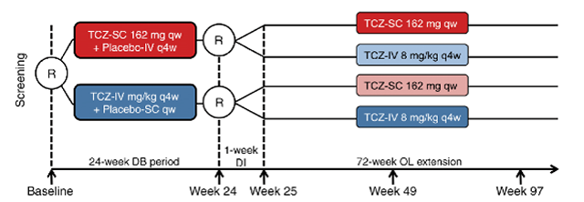
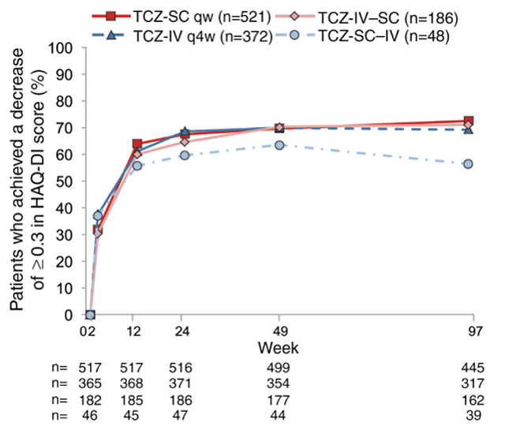

アクテムラ皮下注も点滴静注と同様にHAQ-DIを改善し2年間維持した(SUMMACTA Study)
【方法】
1262名のRA患者をTCZ-sc+プラセボ-iv群とTCZ-iv+プラセボ-sc群に割付けた二重盲検比較試験を24週行う。その後TCZ-sc投与例は11:1（TCZ-sc521例、TCZ-iv48例）に、TCZ-iv例は2:1 （TCZ-iv372例、TCZ-sc186例）に割付し、94週間観察。

| HAQ-DIが0.3以上低下した割合 | （94週時） |
|---|---|
| sc | 72.4％ |
| iv | 69.1％ |
| iv→sc | 71％ |
| sc→iv | 56.4％ |

アクテムラ点滴静注で証明されたQOL改善効果は、アクテムラ皮下注でも期待できると考えられる